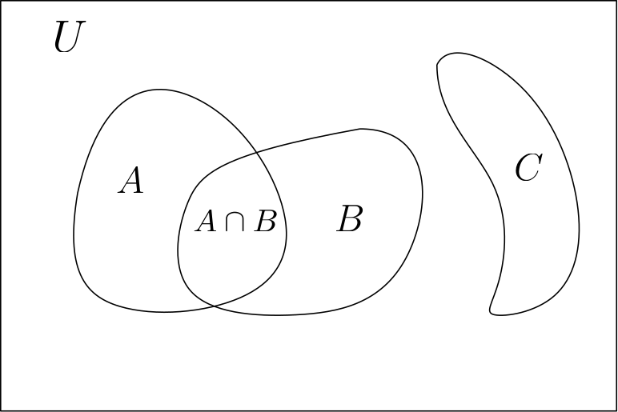

Naive theory of sets#
Introduction#
Set theory is the mathematical study of collections of objects. A relatively new branch of mathematics, it was born in late 1873 in the work of Georg Cantor who was investigating the properties of the real numbers.
Despite the apparent simplicity of the basic objects it treats, sets and their elements, set theory is a rich and fundamental branch of modern mathematics. Its birth was a watershed moment, playing a central role in the quest for a formal foundation of mathematics that took place late in the 19th century and early 20th centuries. During this time, it became apparent that concepts such as infinite sets were not properly handled by mathematicians: famous paradoxes had arisen that required immediate resolution - lest mathematics is shown to be inconsistent!
The solution to this crisis was given by a formal theory of sets introduced by Zermelo and Fraenkel, which finally succeeded in formalising the notion of sets, thus giving mathematics a proper foundation. Since then, set theory has been an active subject of research for mathematicians, logicians, and philosophers.
In this course, our investigations will mostly concern finite sets. Therefore a naive theory of sets (much simpler than the aforementioned theory of Zermelo and Fraenkel) will suffice. This affords us the privilege of working in informal language (instead of formal logic) and taking for granted various basic notions. However we should always be aware of the following drawback of our informal approach: our results will not always directly transfer from finite to infinite sets. Infinity is as wonderful as it is unintuitive!
Mathematical language#
Before we proceed with our study of sets, let us first fix some basic notions of the informal mathematical language we will develop during our study.
We start with the basic notions of constants and connectives.
Constants are symbols corresponding to named objects whose existence we assume to be given. Examples of such constants are:
The \(\top\) and \(\bot\) symbols which are read as “true” and “false” respectively,
any other symbols such as \(\bullet, \circ, \triangle\).
Of course a language that can only refer to one individual object at a time isn’t very interesting. Connectives serve to glue together formulas to form bigger ones. In the simplest case they can be either unary in which case they modify a single formula or binary in which case they are used to glue together two formulas. The basic ones we’ll use are:
\(\lnot\) which is a unary connective read as “not”.
\(\land\) which is a binary connective read as “and”.
\(\lor\), which is a binary connective read as “or”.
\(\rightarrow\) which is a binary connective read as “implies”. Examples of use of such connectives are \(\not \triangle\), \(true \land false\), \(\bullet \implies true\). For more complicated formulas, we may use parenthesis for disambiguating: \((\not true) \implies true\).
So far all we have done is define the syntax of our language: symbols with no intrinsic meaning and ways to combine them to form bigger formulas. Assigning a meaning to them is the subject of semantics which we will treat in a very informal manner:
To the symbols \(\top\) and \(\bot\) we will assign the two classical boolean values of \(true\) and \(false\).
To the symbols \(\bullet, \circ, \triangle\) we can assign “abstract objects” which we assume already exist and whose precise nature isn’t relevant.
To the connectives we assign unary or binary boolean functions:
To \(\lnot\) we will assign the function which maps \(true\) to \(false\) and \(false\) to \(true\).
To \(\land\) we will assign the function which evaluates to \(true\) if and only if both its inputs are \(true\). That is, to \(P \land Q\) we assign the value \(true\) if and only if both \(P\) and \(Q\) both have the value \(true\).
To \(\lor\) we will assign the function which evaluates to \(true\) if either of its inputs is \(true\). That is \(P \lor Q\) is \(true\) if either \(P\) or \(Q\) are.
To \(\rightarrow\) we assign the function that evaluates to \(false\) if and only if its first argument is \(true\) and the second one is \(false\), otherwise it evaluates to \(true\). That is \(P \rightarrow Q\) is always \(true\) except if \(P\) is \(true\) and \(Q\) is \(false\), in which case the whole formula is \(false\).
We will further enrich this language with new concepts where this is useful. We will also freely switch between this more abstract notation and its natural language equivalent, employing whichever allows us to most succintly and clearly state our desired formulas.
Sets and their elements#
Finally we are ready to introduce our central objects of study.
Definition (Set).
A set is an unordered collection of objects, called elements of the set. These elements are understood to be all distinct (no repetitions allowed).
While very informal from a modern mathematical perspective, this “definition” is quite close to the one Cantor himself gives in [Can95]:
A set is a gathering together into a whole of definite, distinct objects of our perception or of our thought—which are called elements of the set.
—Georg Cantor
Having introduced a new mathematical object, let us now enrich our language with new constants appropriate for talking about sets. First of all we introduce the symbol \(\emptyset\) which stands for the empty set: the set that contains no element, which we assume to exist. We will also assume the existence of the set of natural numbers for which we introduce the constants \(\mathbb{N}\) for the set itself and the usual indo-arabic numerals \(0, 1, 2, 3, \dots\) for its elements. We may also admit some basic functions and relations on natural numbers such as \(+, -, *, /, \geq, \leq\).
Finally, we admit extensional notation which is a very common way to represent sets by listing its elements seperated by commas and put between braces \(\{, \}\). For example:
A set containing the first 3 non-zero natural numbers may be written as: \(\{1, 2, 3\}\).
A set containing two abstract elements is \(\{\bullet, \circ \}\).
The empty set, which contains nothing, is written as \(\{\}\) or \(\emptyset\) for short.
A set being an object in itself can therefore be an element of another set: \(\{1,2,\{1,5\}\}\) is a perfectly valid set containing the elements \(1, 2, \{1, 5\}\) [1].
Two sets will be considered the same or equal if they have the same elements. As mentioned in the above definition the order the elements in the extensional representation of a set doesn’t matter: the sets \(\{1,2,3\}, \{3,2,1\}, \{2,1,3\}\) are all equal. For this relation, we introduce the connective \(=\) which is a function of two sets: \(A = B\) is \(true\) if \(A\) and \(B\) are equal.
Another important notion is that of membership between an object and a set. We use the connective \(\in\) to denote this relation. For example, \(1 \in \{1, 2, 3\}\) stands for the statement that the set \(\{1, 2, 3\}\) contaons \(1\) (which is true!), while \(4 \in \{1, 2, 3\}\) is the statement that the same set contains \(4\) (which is false!). Finally, \(\not\in\) stands for the relation of non-membership: \(4 \not\in \{1,2,3\}\) is true.
Variables and quantifiers#
To facilitate the manipulation of sets and their objects, we enrich our language by allowing the use of variables: these will be used as arguments to set-theoretic functions. We will denote variables by lowercase latin letters \(x, y, z, \dots\) intented to stand for elements and uppercase ones such as \(A, B, S, U \dots\) intented to stand for sets. Variables themselves don’t have much use unless coupled with the use of quantifiers: the universal quantifier \(\forall\) and the existential quantifier \(\exists\) which are read as “for all” and “there exists”. Quantifiers bind variables in a formula: both \(\forall\) and \(\exists\) are accompanied by a variable and a formula. The basic syntax is that of \(\forall x P\) and \(\exists x P\), where \(P\) is a formula in which the variable \(x\) appears free, that is not bound by any quantifier.
In terms of semantics, variables will be given values in a set which contains all objects we’re interested in. This universal set is also called the domain of discourse.
The formula \(\forall x~P\) will be given the value \(true\) if and only if the formula \(P\) is true for any possible assignment of \(x\). The formula \(\exists x~P\) will be given the value \(true\) if and only if there exists at least one assignment of \(x\) that makes \(P\) true.
For example,
The formula \(\exists x~(x \in {1,2,3}) \land (x \in \{2,4,6\})\) is true,
while \(\forall x ~ (x \in \{1,2,3\}) \rightarrow (x \in \{2,4,6\})\) is false.
We’ll often use the shorthand \(\exists x \in S~P\) to stand for \(\exists x ~ (x \in S) \land P\) and \(\forall x \in S~P\) to stand for \(\forall x . (x \in S \rightarrow P)\). Letting \(A = \{1,2,3\}\) and \(B = \{2,4,6\}\) we can use this shorthand notation to rewrite the above two examples as:
\(\exists x \in A ~ x \in B\) and
\(\forall x \in A ~ x \in B\).
The subset relation#
Given the above, we may now define a relation between sets which captures the notion of a set being inside another.
Definition (Subset).
We say that a set \(A\) is a subset of a set \(B\), denoted by \(A \subseteq B\), if all elements of \(A\) belong to \(B\). That is, \(A \subseteq B\) if and only if \(\forall x \in A ~ x \in B\).
From this, two important facts follow:
Any set is a subset of itself: \(A \subseteq A\) is true.
The empty set is a subset of any set: \(\forall S~\emptyset \subseteq S\) is true.
As an example, \(\{2,4,6\} \subseteq \{1,2,3,4,5,6\}\), while \(\{1,2,3\} \not\subseteq \{1,2,\{3,4,5\}\}\), where \(A \not\subseteq B\) stands for \(\lnot(A \subseteq B)\).
A convenient way for describing subsets which complements the extensional notation introduced above is the intensional way: we specify a set \(A\) as a subset of some set \(B\) whose elements satisfy an additional property. For example: \(\{ x \in \{1,2,3\} \lvert x >= 2\}\) defines the set \(\{2,3\}\).
Operations on sets#
Apart from the extensional and intensional ways of constructing sets, we may construct new sets by combining old ones via a number of operations:
Definition (Union).
The union of two sets \(A\) and \(B\), denoted by \(A \cup B\), is the set consisting of all elements of \(A\) and all those of \(B\).
Definition (Intersection).
The intersection of two sets \(A\) and \(B\), denoted by \(A \cap B\), is the set consisting of all elements of \(A\) that also belong to \(B\).
Definition (Difference).
The difference of two sets \(A\) and \(B\), denoted by \(A \setminus B\), is the set consisting of all elements of \(A\) that do not belong to \(B\).
(def-complement)
Definition (Complement).
The complement of a set \(A\) with respect to the domain of discourse \(U\) is \(U \setminus A\).
Some important identities involving these operations are:
\(A \cap B = B \cap A\)
\(A \cup B = B \cup A\)
\(A \cap (B \cap C) = (A \cap B) \cap C\)
\(A \cup (B \cup C) = (A \cup B) \cup C\)
\(A \cap (B \cup C) = (A \cap B) \cup (A \cap C)\)
\(E \setminus (E \setminus A) = A\)
\(E \setminus (A \cup B) = (E \setminus A) \cap (E \setminus B)\)
\(E \setminus (A \cap B) = (E \setminus A) \cup (E \setminus B)\)
An easy way to convince ourselves that these properties hold is to draw Venn diagrams, in which the universe of discourse is drawn as a box and its subsets are drawn as “ovaloid” shapes such that the shapes corresponding to two sets \(A,B\) are overlapping if \(A \cap B \neq \emptyset\) and non-overlapping otherwise.
For example, for three sets \(A,B,C\) with \(A \cap B \neq \emptyset, (A \cup B) \cap C \neq \emptyset\) we draw the following:

Cardinality#
An important notion for sets is that of cardinality:
Definition (Cardinality)
The cardinality of a finite set is its number of elements.
We often use the notation \(\lvert A \rvert\) to denote the cardinality of a set \(A\). For example the set \(\{1,2,3\}\) is of cardinality \(\lvert\{1,2,3\}\rvert = 3\) while \(\lvert\{1,2,\{1,5\},\emptyset,\{2,3,\{4\}\}\}\rvert = 5\).
Warning
A word of caution is in order: the above definition is very, very informal and quite circular. The formal definition of cardinality used in contemporary mathematics is actually founded on the notion of bijections, which handles in a uniform manner the case of finite and infinite sets.
Tuples and Cartesian products#
Let us now introduce yet another notion of a collection of elements.
Definition (\(n\)-tuple)
Given a natural number \(n \in \mathbb{N}\), an \(n\)-tuple is an ordered collection of \(n\) elements.
Unlike sets, \(n\)-tuples therefore care about the order elements are listed in and allow repetitions as well.
We will denote \(n\)-tuples using a syntax similar to that of sets, replacing the braces \(\{,\}\) by parenthesis \(\(,\)\). To \(n\)-tuples will be considered equal if they contain the same elements in the same order. Examples of some \(n\)-tuples are:
\((1,2)\), a \(2\)-tuple also called a pair.
\((2,1)\), another \(2\)-tuple different from the above.
\((1,2,3,4,5)\), \((1,8,10,3,0)\), two \(5\)-tuples.
The following construction allows us to construct \(n\)-tuples from sets.
Definition (\(n\)-fold Cartesian product)
Given a natural number \(n \in \mathbb{N}\) and \(n\) sets \(S_1, S_2, \dots, S_n\), the \(n\)-fold Cartesian product \(S_1 \times S_2 \times \dots \times S_n\) is the set of all possible \(n\)-tuples for which the first element is drawn from \(S_1\), the second is drawn from \(S_2\), and so on:
\(S_1 \times S_2 \times \dots \times S_n = \{(s_1, s_2, \dots, s_n)~\lvert~s_1 \in S_1, s_2 \in S_2, \dots, s_n \in S_n\}\)
When \(n=2\), we simply speak of the Cartesian product of two sets.
Powerset#
The powerset construction allows us to collect all subgroups of a given set \(S\):
Definition (Powerset)
Given a set \(S\), the powerset \(\mathcal{P}(S)\) is the set consisting of all subsets of \(S\):
For example \(\mathcal{P}(\{1,2\}) = \{\emptyset, \{1\}, \{2\}, \{1,2\}\}\).
For finite sets, the cardinality of their powerset is given by the following lemma.
Lemma (Cardinality of Powerset)
Given a finite set \(S\), the powerset \(\mathcal{P}(S)\) has cardinality:
Exercises#
Exercise 1#
Evaluate the following formulas:
\(\emptyset \subseteq \emptyset\),
\(\emptyset \subset \emptyset\),
\(\emptyset \in \emptyset\),
\(\forall X~\emptyset \subseteq X\),
\(\forall X~\emptyset \in X\),
\(\exists X~\emptyset \in X\),
\(\exists X~\emptyset \notin X\).
\(\emptyset \in \mathcal{P}(S)\) for any set \(S\).
\(S \in \mathcal{P}(S)\) for any set \(S\).
Exercise 2#
Describe a way to translate between formulas involving occurences of the \(\forall\) quantifier to formulas involving only the \(\exists\) quantifier, in a way which preserves the truth value of said formulas.
Exercise 3#
Describe a way to translate between formulas involving occurences of the \(\exists\) quantifier to formulas involving only the \(\forall\) quantifier, in a way which preserves the truth value of said formulas.
Exercise 4#
Given an equivalent definition of the membership relation using the \(\exists\) equantifier.
Exercise 5#
Assuming the domain of discourse is some finite set \(U\), describe a way to translate formulas involving \(\forall\) and \(\exists\) to formulas involving no quantifiers, in a way which preserves the truth value of said formulas.
Exercise 6#
Draw Venn diagrams to convince yourselves of the properties listed in the Operations on sets section.
Bibliography#
Georg Cantor. Beiträge zur begründung der transfiniten mengenlehre. Mathematische Annalen, 46(4):481–512, 1895.